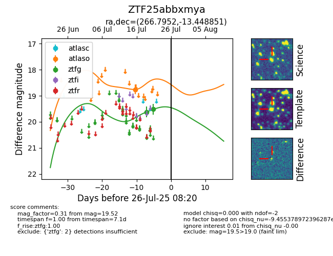

Target ZTF25abbxmya at 2025-08-06 17:45, see:
FINK: fink-portal.org/ZTF25abbxmya
Lasair: lasair-ztf.lsst.ac.uk/objects/ZTF25abbxmya
ALeRCE: alerce.online/object/ZTF25abbxmya
alt names
ZTF25abbxmya (ztf,fink)
coordinates:
equatorial (ra, dec) = (266.7952,-13.44885)
galactic (l, b) = (13.5001,+7.67008)
photometry
last atlaso=18.76, ztfg=19.52
1 atlaso, 2 ztfg detections
